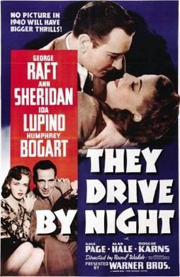

THE STANFORD THEATRE
Now Showing
·
Upcoming
·
Past
·
Search
February 8 - March 3, 2019
Humphrey Bogart Festival
7 bills
February 8 - 10
In a Lonely Place (1950)
94 min
Casablanca (1942)
102 min
February 13 - 14
The Big Sleep (1946)
114 min
Dark Passage (1947)
106 min
February 15 - 17
The African Queen (1951)
105 min
Beat the Devil (1953)
89 min
February 20 - 21
Key Largo (1948)
100 min
Brother Orchid (1940)
91 min
February 22 - 24
Treasure of the Sierra Madre (1948)
126 min
Black Legion (1937)
83 min
February 27 - 28

They Drive by Night (1940)
95 min
Action in the North Atlantic (1943)
126 min
March 1 - 3
The Caine Mutiny (1954)
124 min
We're No Angels (1955)
106 min
Archived
•
StanfordTheatre.org Original